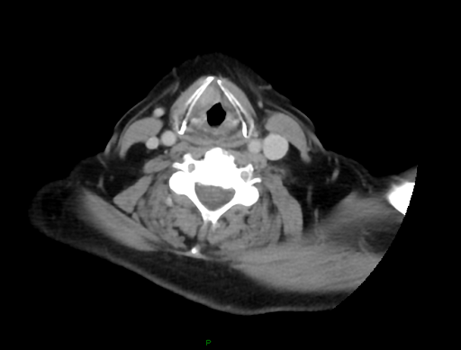
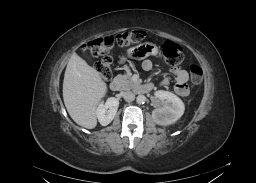

1. O Risco: Perda de Peso Grave
Identificação e Queixa Principal
Paciente procura a nuticionista oncológica após diagnóstico de Câncer de Hipofaringe (cT3N0M0). Relata dor intensa (Odorofagia) e dificuldade para engolir (Disfagia).
Alerta Nutricional: Perda Ponderal
10 kg12,5% do peso habitual (80 kg) perdido em 6 meses.
Classificação: Perda de Peso **GRAVE**.
2. O Diagnóstico: Câncer de Hipofaringe
Carcinoma Epidermoide cT3N0M0
O tumor afeta a região da hipofaringe/laringe, o que é a causa primária da dificuldade para se alimentar.

3. A Avaliação Bioquímica e Etiológica
Sinais de Inflamação e Comprometimento
| Parâmetro | Resultado | Interpretação | Fator GLIM |
|---|---|---|---|
| Albumina Sérica | 3,0 g/dL | Baixa | - |
| PCR (Proteína C Reativa) | 15 mg/L | Elevada | Etiológico (Inflamação) |
| Ingestão Estimada | < 500 Kcal/dia | Redução Extrema | Etiológico (Ingestão) |
4. O Diagnóstico GLIM e a Reserva Muscular
Diagnóstico: Desnutrição Grave
Confirmado pela presença de **Perda de Peso Grave (Fenotípico)** e fatores etiológicos (Inflamação e Ingestão Reduzida).
Fator de Proteção: Musculatura Preservada
A avaliação por TC de abdômen demonstra **boa composição corporal inicial**, o que é um fator positivo para a tolerância ao tratamento.

5. O Plano de Intervenção Nutricional Imediata
Metas e Prescrição Dietética
Energia
2100 - 2450 Kcal/dia
(30-35 Kcal/kg)Proteína
105 g/dia
(≈ 1,5 g/kg)Dieta **Pastosa/Semilíquida** enriquecida (óleos, cremes) e servida em temperaturas frias ou ambiente.
Suplementação e Acesso
1. **SONE:** $2 \text{ a } 3$ porções/dia de Suplemento Hipercalórico/Hiperproteico.
2. **Acesso:** Sugestão de **Gastrostomia (GTT) Profilática** para garantir o aporte durante a Quimio-Radioterapia.
6. Monitoramento e Prognóstico
Acompanhamento Durante o Tratamento
- **Monitoramento Semanal:** Peso corporal (manutenção é o sucesso) e aceitação oral.
- **Monitoramento Mensal:** Exames (PCR, Albumina) e ASG.
- **Manejo Ativo:** Ajustar a via de alimentação (oral vs. GTT) de acordo com a mucosite e dor.